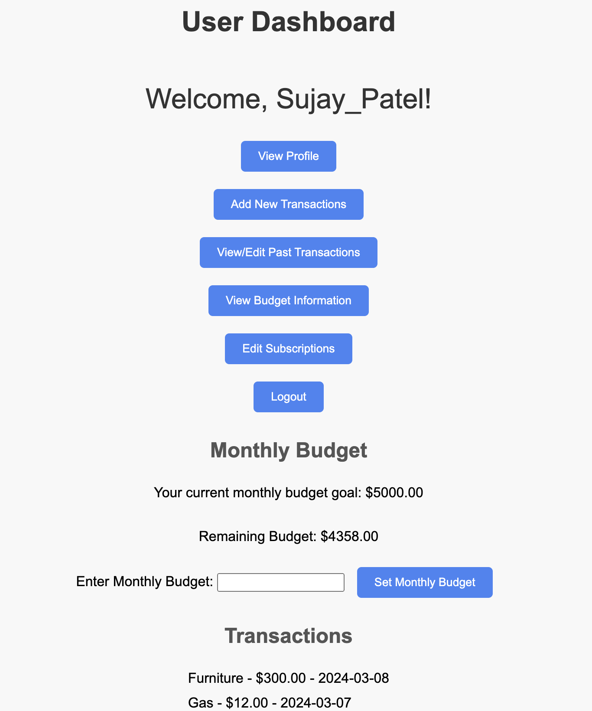
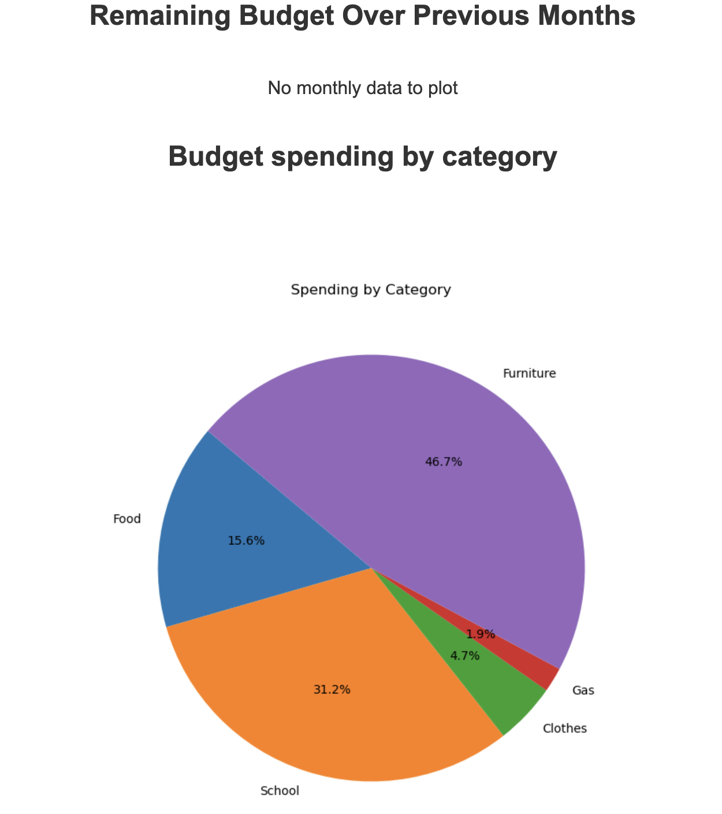
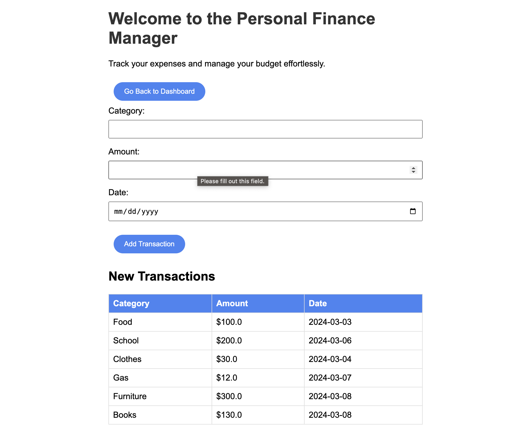

Screenshots

Dashboard Page

Budget Page/Analysis

Transactions Page
Dynamic web application for effective personal finance management
The Personal Finance Manager is a dynamic web application designed to empower users in effectively managing their personal finances. Developed with a focus on user-friendly interfaces and robust data analysis, this project serves as a comprehensive solution for individuals seeking a streamlined approach to budgeting, expense tracking, and financial planning.
Dashboard Page
Budget Page/Analysis
Transactions Page